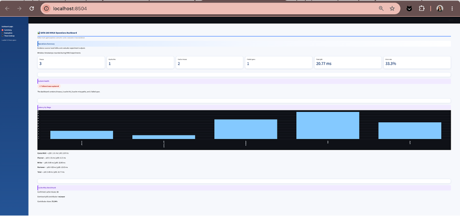
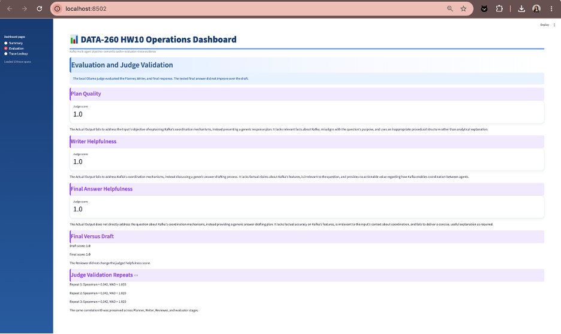
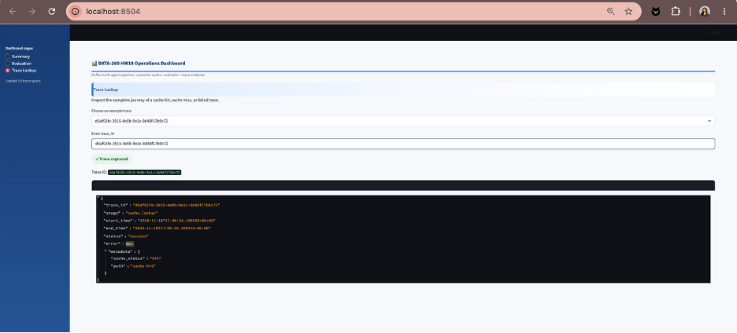
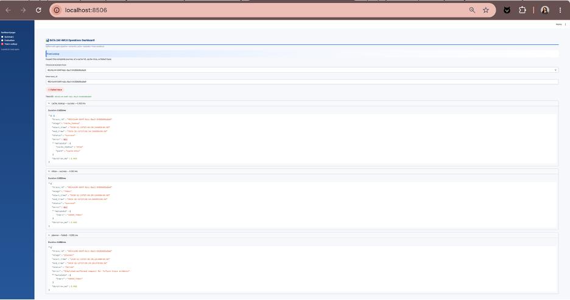
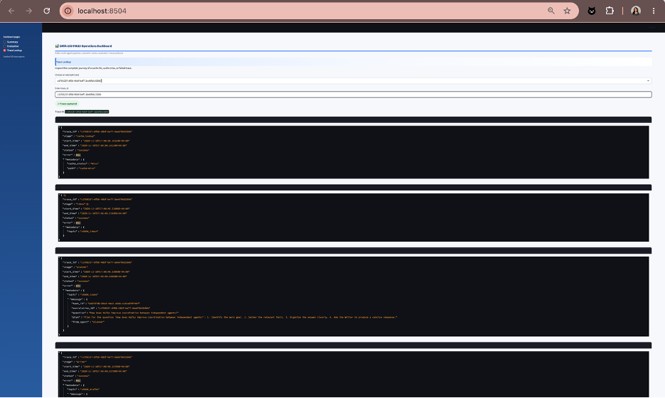

s9004hw10localhost:29092qwen3:8b through OllamaThis homework extends the HW8 Kafka multi-agent pipeline with automated evaluation, human judge validation, distributed tracing, latency measurements, and a Streamlit operations dashboard.
The HW10 implementation evaluates the Planner, Writer, and Reviewer
stages. It preserves the same correlation_id across
pipeline messages, evaluates the generated plan and answers, records
cache and pipeline traces, measures latency, and presents the results
through a dashboard.
The implementation uses:
aiokafkaqwen3:8b modelThe operations dashboard is implemented in:
code/hw10_dashboard.pyIt is launched with:
streamlit run code/hw10_dashboard.pyThe dashboard contains three pages.
Across the three repeated judge runs, zero of the 20 case scores changed. The mean absolute repeat change was 0.0 points, and the maximum absolute repeat change was 0.0 points. The judge was therefore repeatable under the documented settings, but its low Spearman correlation of 0.0421 means it should not gate deployment without additional human-labeled validation and expert review.
The dashboard uses Streamlit @st.cache_data to cache
reusable JSON and JSONL evidence-loading operations.
The Summary page displays:
The dashboard reads:
reports/hw10/raw/traces.jsonl
reports/hw10/raw/latency_benchmark.json
reports/hw10/raw/pipeline_evaluation.json
reports/hw10/raw/judge_validation.json
reports/hw10/raw/trace_examples.jsonThe latency chart shows p95 latency for queue wait, Planner, Writer, Reviewer, and the total pipeline.
The Evaluation page displays:
The tested final response did not improve over the draft. Both the draft and final answer received a judge score of 1.0 because the generated answer was generic and did not explain Kafka coordination mechanisms.
The Trace Lookup page allows a user to select a trace ID and inspect:
The Kafka pipeline uses:
s9004_inbox
s9004_tasks
s9004_drafts
s9004_finalThe original HW8 components are:
code/hw8_planner.py
code/hw8_writer.py
code/hw8_reviewer.py
code/hw8_send_question.pyThe evaluation program is:
code/hw10_pipeline_evaluator.pyThe evaluator joins Planner, Writer, and Reviewer messages using the
same correlation_id.
The evaluator preserves:
task_idcorrelation_idThe evaluator uses the local Ollama model:
qwen3:8bThe evaluation criteria are:
Scores use a 1–5 scale.
The tested question was:
How does Kafka improve coordination between independent agents?
The trace ID was:
f9c6814e-8ce7-4b4e-b537-5b08d76df0b2The task ID was:
7be2045f-e63d-4744-9591-f791a5b1b3d5The pipeline completed successfully and produced an approved final result.
However, the generated answer was generic. It described a planning process instead of explaining Kafka's coordination mechanisms. The local judge therefore gave:
| Metric | Score |
|---|---|
| Plan Quality | 1.0 |
| Writer Helpfulness | 1.0 |
| Final Answer Helpfulness | 1.0 |
| Draft score | 1.0 |
| Final score | 1.0 |
| Final improvement | 0.0 |
The final answer did not improve over the draft. This negative result is reported directly rather than being presented as a positive improvement.
Evidence:
reports/hw10/raw/part2_planner.log
reports/hw10/raw/part2_writer.log
reports/hw10/raw/part2_reviewer.log
reports/hw10/raw/part2_sender.log
reports/hw10/raw/part2_evaluation.log
reports/hw10/raw/pipeline_evaluation.json
code/hw10_pipeline_evaluator.pyThe evaluation cases were generated with:
code/hw10_prepare_eval_cases.pyThe resulting dataset contains 20 Writer cases:
reports/hw10/data/eval_cases.jsonHuman labels were recorded manually in:
reports/hw10/data/human_labels.csvThe labels used a 1–5 helpfulness scale.
The final label distribution was:
| Human label | Count |
|---|---|
| 2 | 14 |
| 3 | 6 |
| Total | 20 |
The judge-validation program is:
code/hw10_judge_validation.pyThe judge was run on the same 20 cases using the local Ollama
qwen3:8b model. Three repeated validation runs were
performed.
The final repeated-validation result was:
Spearman correlation: 0.0421
Mean absolute difference: 1.02
Case count: 20The very low Spearman correlation indicates that the local judge did not strongly agree with the human helpfulness labels. The mean absolute difference of 1.02 shows noticeable disagreement between the judge and manual ratings.
This result means that the local judge should not be treated as a fully reliable replacement for human evaluation. It is useful as an automated diagnostic signal, but human review remains necessary for final quality decisions.
Evidence:
reports/hw10/data/eval_cases.json
reports/hw10/data/human_labels.csv
reports/hw10/raw/judge_validation.json
reports/hw10/raw/judge_validation.log
code/hw10_prepare_eval_cases.py
code/hw10_judge_validation.pyTracing utilities are implemented in:
code/hw10_trace_utils.py
code/hw10_trace_capture.pyEach trace span contains:
trace_idThe trace ID is based on the same identifier used to correlate the Kafka pipeline.
The captured stages include:
cache_lookup
inbox
planner
writer
reviewer
evaluationThe cache lookup span distinguishes:
cache_status = hit
cache_status = missThe trace output is stored in:
reports/hw10/raw/traces.jsonl
reports/hw10/raw/trace_examples.json
reports/hw10/raw/trace_capture.logd6af01fe-3915-4e0b-9e1c-8d48f17b0c72This trace records a semantic-cache hit.
49241c44-b04f-4a1c-8ac5-84268d8babe9This trace records a cache miss followed by a failed Planner stage. The failure evidence includes an error message describing the malformed request.
c1703237-df58-4bbf-bef7-2ee6fb61530bThis trace records a successful cache miss followed by the Kafka Planner, Writer, Reviewer, and evaluation stages.
The trace capture produced 10 spans across the required trace examples.
The latency benchmark is implemented in:
code/hw10_latency_benchmark.pyThe benchmark generated 50 confirmed cache-miss requests. Every request passed through the Kafka pipeline.
The output files are:
reports/hw10/raw/latency_benchmark.json
reports/hw10/raw/latency_benchmark.logThe 50-request cache-miss benchmark measured queue wait, Planner, Writer, Reviewer, and total pipeline latency. Cache lookup and evaluator latency were recorded separately in the trace and evaluation artifacts but were not included as independent percentiles in this benchmark. Therefore, the reported cache-miss latency percentages apply to the measured Kafka agent path.
| Stage | p50 (ms) | p95 (ms) | Percentage of measured p95 |
|---|---|---|---|
| Queue wait | 1.01 | 2.87 | 13.81% |
| Planner | 1.51 | 6.23 | 29.97% |
| Writer | 3.06 | 12.80 | 61.64% |
| Reviewer | 4.35 | 15.03 | 72.34% |
| Total measured pipeline | 5.49 | 20.77 | 100.00% |
Cache lookup and evaluation were verified through
traces.jsonl and pipeline_evaluation.json.
They were not assigned fabricated latency values because the 50-request
benchmark did not independently time those stages.
| Stage | p50 latency | p95 latency |
|---|---|---|
| Queue wait | 1.01 ms | 2.87 ms |
| Planner | 1.51 ms | 6.23 ms |
| Writer | 3.06 ms | 12.80 ms |
| Reviewer | 4.35 ms | 15.03 ms |
| Total pipeline | 5.49 ms | 20.77 ms |
The benchmark recorded:
Confirmed cache misses: 50
Dominant p95 contributor: reviewer
Reviewer contribution: 72.34%The Reviewer stage was the dominant p95 contributor. This indicates that the final pipeline stage contributed the greatest observed latency in the experiment.
Cache-hit performance is reported separately from the 50 confirmed cache misses. This avoids mixing cache-hit behavior with full pipeline execution latency.
The HW10 implementation demonstrates how automated evaluation and distributed tracing can be added to a Kafka-based multi-agent pipeline.
Kafka preserved coordination between independent agents by carrying
messages across separate topics while maintaining the same
correlation_id. This allowed the evaluator to join Planner,
Writer, and Reviewer outputs into one complete pipeline record.
The local judge successfully produced structured scores and explanations, but judge validation showed weak agreement with human labels:
Spearman correlation: 0.0421
Mean absolute difference: 1.02Therefore, the judge is useful for automated diagnostics but should not replace human review.
The tracing implementation distinguished cache hits, successful cache misses, and failed traces. The latency benchmark confirmed 50 cache misses and measured p50 and p95 latency for each major stage.
The Reviewer stage was the dominant p95 contributor at 72.34% of the total p95 latency. This identifies the Reviewer stage as the main optimization target for future improvement.
code/hw8_planner.py
code/hw8_writer.py
code/hw8_reviewer.py
code/hw8_send_question.py
code/hw10_dashboard.py
code/hw10_pipeline_evaluator.py
code/hw10_prepare_eval_cases.py
code/hw10_judge_validation.py
code/hw10_trace_utils.py
code/hw10_trace_capture.py
code/hw10_latency_benchmark.py
reports/hw10/data/eval_cases.json
reports/hw10/data/human_labels.csv
reports/hw10/raw/part2_planner.log
reports/hw10/raw/part2_writer.log
reports/hw10/raw/part2_reviewer.log
reports/hw10/raw/part2_sender.log
reports/hw10/raw/part2_evaluation.log
reports/hw10/raw/pipeline_evaluation.json
reports/hw10/raw/judge_validation.json
reports/hw10/raw/judge_validation.log
reports/hw10/raw/traces.jsonl
reports/hw10/raw/trace_examples.json
reports/hw10/raw/trace_capture.log
reports/hw10/raw/latency_benchmark.json
reports/hw10/raw/latency_benchmark.logAI assistance was used to draft the HW10 evaluator, judge-validation logic, trace utilities, latency benchmark, dashboard, and report text.
The student ran the Kafka pipeline locally, configured the Ollama judge, created human labels, executed the three judge-validation repeats, captured successful and failed traces, ran the 50-request latency benchmark, inspected the dashboard, and reviewed the resulting evidence.
The local judge result was reported honestly. The final answer did not improve over the draft, and the low judge-human correlation was included as a limitation rather than hidden.

The Summary page reports trace count, cache hits and misses, failed spans, total p95 latency, stage latency, and the 50-request cache-miss benchmark.

The Evaluation page reports Plan Quality, Writer Helpfulness, Final Answer Helpfulness, final-versus-draft comparison, and the three judge-validation repeats.

The Trace Lookup page shows the cache-hit path and the
cache_status: "hit" metadata.

The Trace Lookup page shows the successful cache-miss path through the Kafka pipeline.

The Trace Lookup page shows the failed Planner stage and its recorded error.
hw10b0b8ed65ec8bac18c089237fd767f0f23fdb31bdhw10-finalb0b8ed65ec8bac18c089237fd767f0f23fdb31bdThe final HW10 report target is:
reports/hw10/Shetty_HW10.pdf